SAE · 1.1 Mo
SAE 3A · Régulation température local LTG
Fiche complète : objectifs, architecture, capteurs, ESP32-H2, Home Assistant/Zigbee, dimensionnement thermique et bilan.
Ouvrir / téléchargerDocuments & preuves
Les liens ci-dessous pointent vers les PDF présents à la racine du dépôt, avec des noms simples pour éviter les erreurs GitHub Pages.
Fiche complète : objectifs, architecture, capteurs, ESP32-H2, Home Assistant/Zigbee, dimensionnement thermique et bilan.
Ouvrir / télécharger
Bases de réalisation électronique : composants, carte physique, câblage, contrôle visuel et vérification.
Ouvrir / télécharger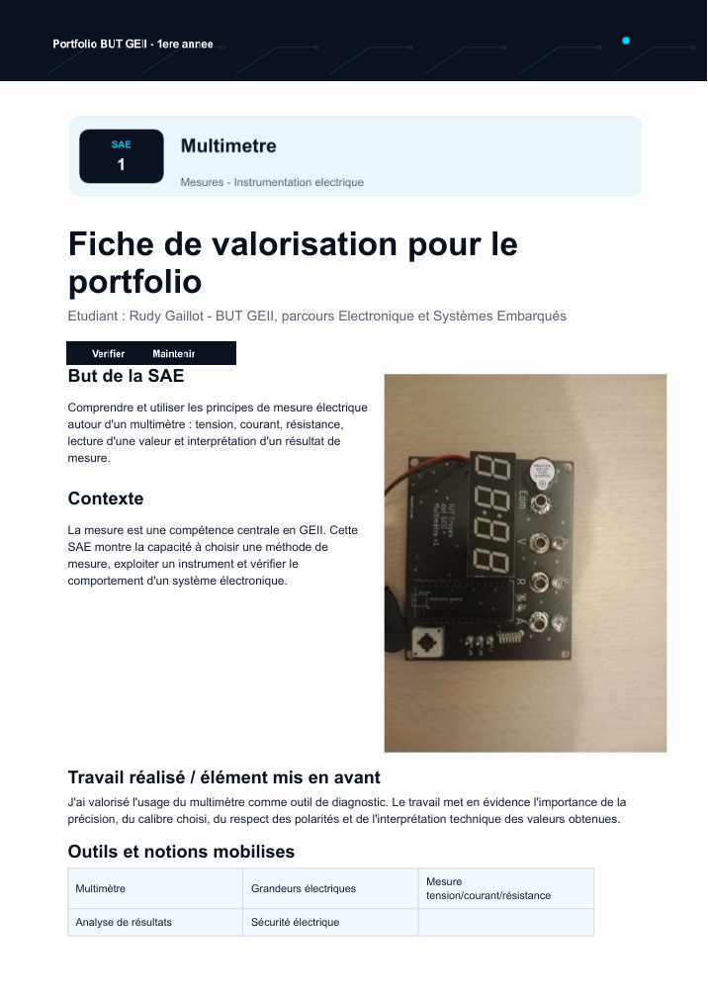
Mesure électrique, choix du calibre, respect des polarités, diagnostic et interprétation des valeurs.
Ouvrir / télécharger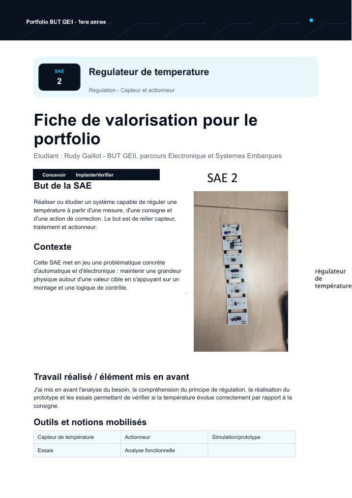
Régulation par mesure, consigne, actionneur, prototype et essais de validation.
Ouvrir / télécharger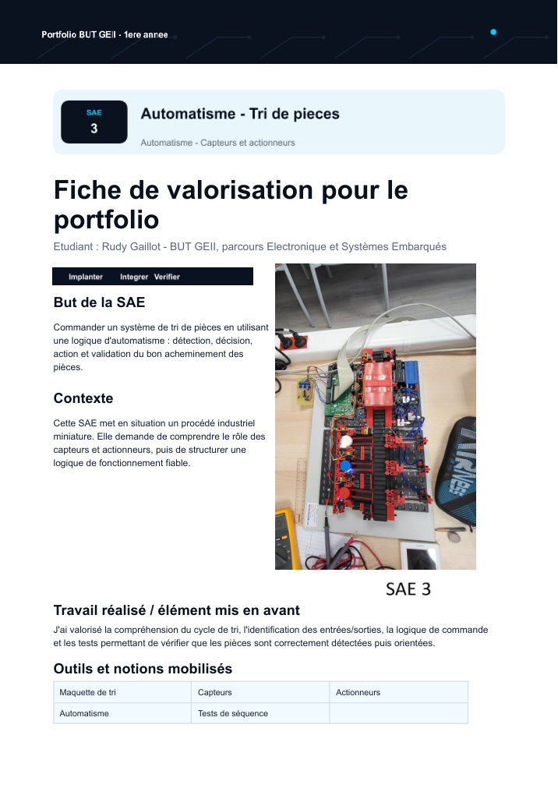
Détection, décision, action, cycle de tri, tests de séquence et correction des dysfonctionnements.
Ouvrir / télécharger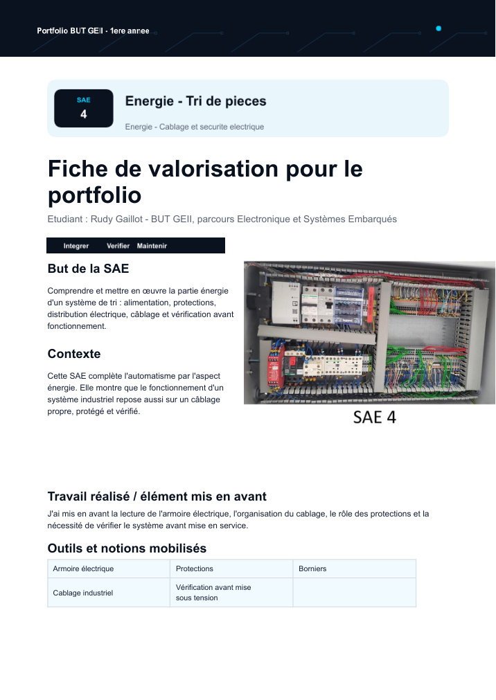
Alimentation, protections, armoire électrique, borniers, câblage industriel et sécurité.
Ouvrir / télécharger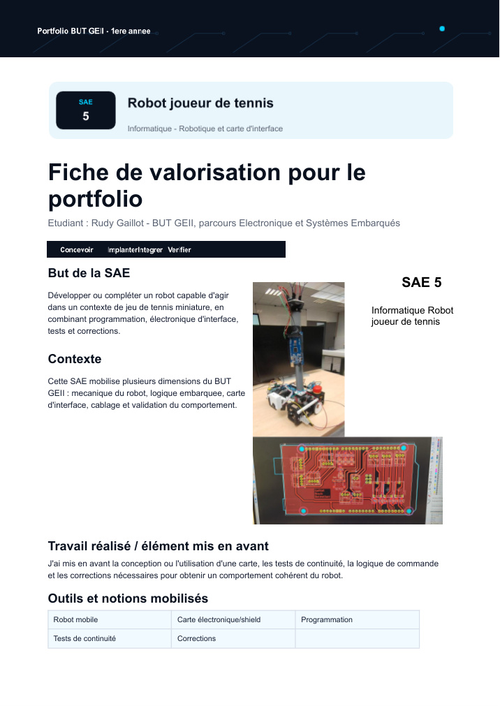
Robotique, carte d’interface, câblage, programmation, tests de continuité et corrections.
Ouvrir / télécharger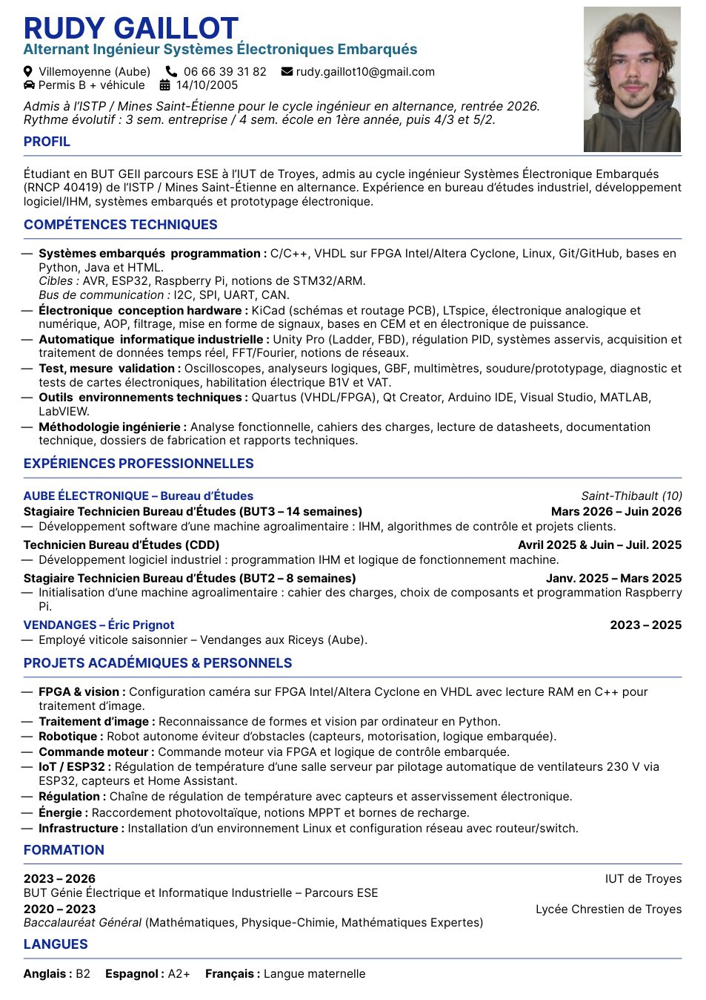
CV orienté systèmes électroniques embarqués, bureau d’études, IHM, prototypage et alternance ingénieur.
Ouvrir / télécharger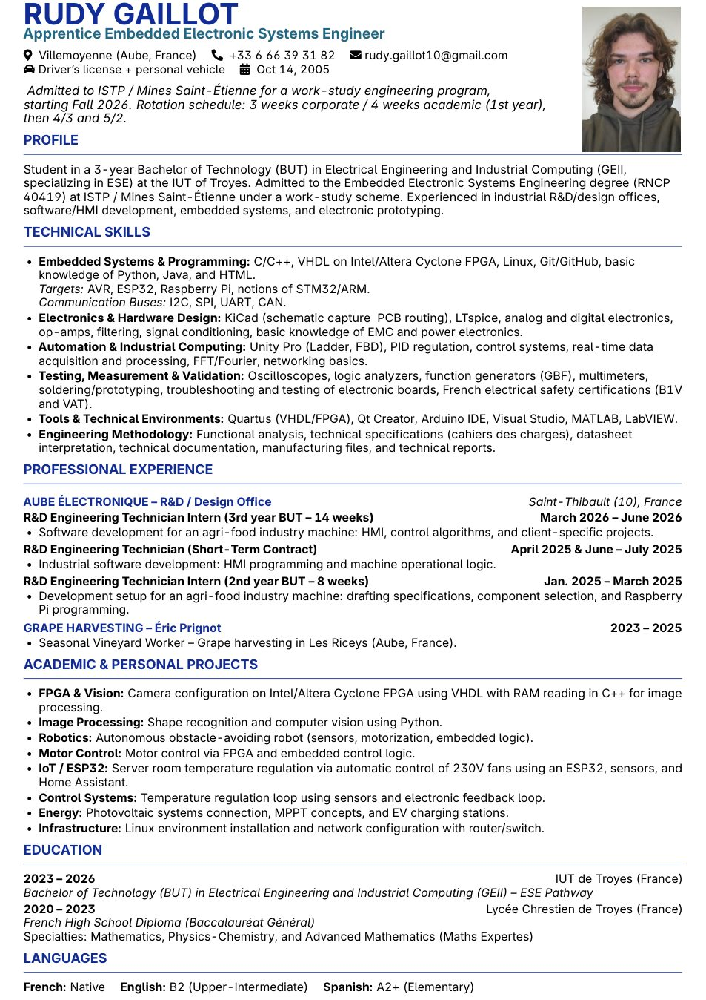
English resume for embedded electronic systems, software/HMI development and industrial R&D applications.
Ouvrir / télécharger
Développement d’une machine de découpe alimentaire, IHM Qt, trajectoires, STM32, essais et intégration.
Ouvrir / télécharger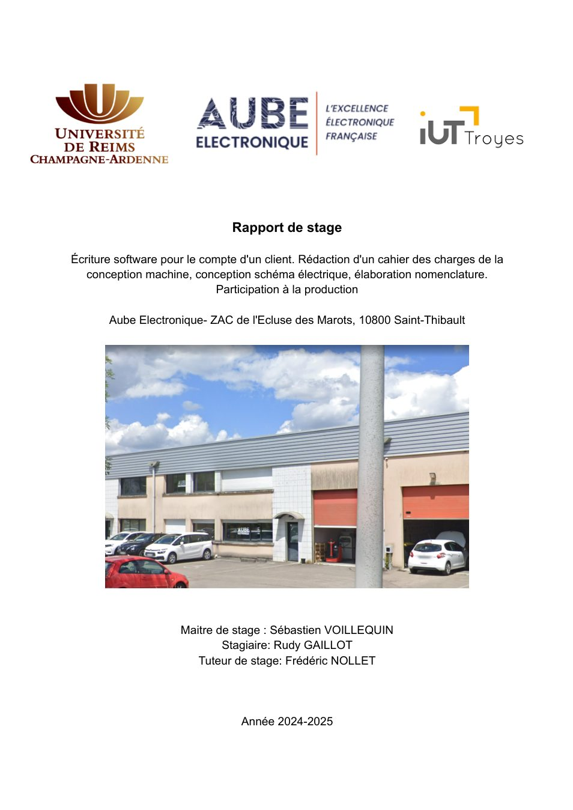
Cahier des charges, choix techniques, conception machine, électronique et développement software.
Ouvrir / télécharger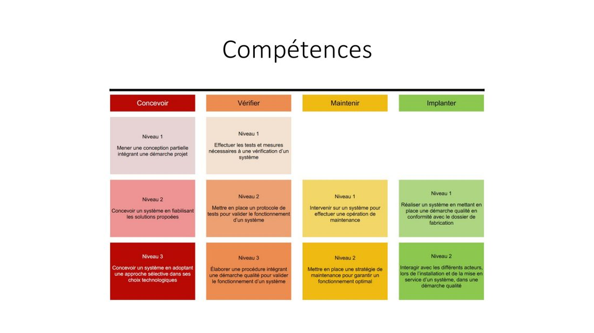
Présentation des compétences de première année GEII et exemples de SAE associées.
Ouvrir / télécharger
Robot guidé par LIDAR rotatif : simulation, matériel réel, tests et diagnostic.
Ouvrir / télécharger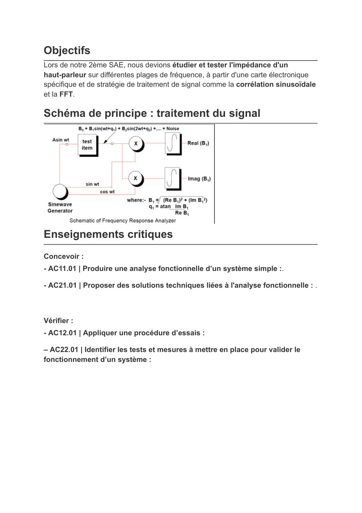
Mesure d’impédance, corrélation sinusoïdale, FFT et validation d’une carte de test.
Ouvrir / télécharger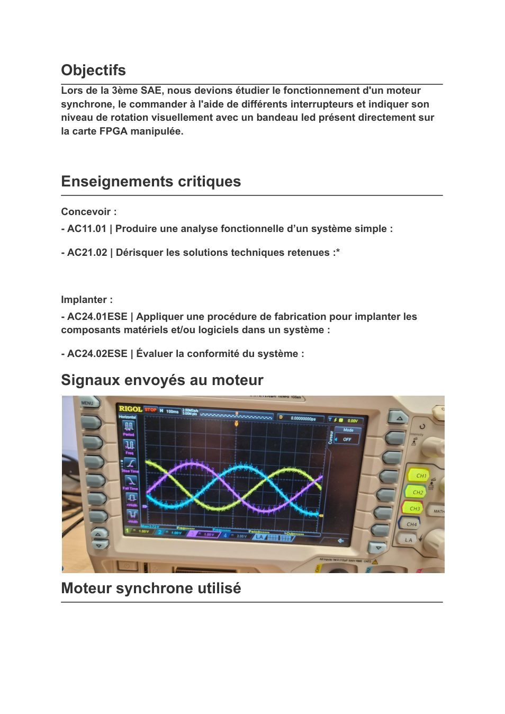
Commande d’un moteur synchrone, signaux de commande et visualisation sur carte FPGA.
Ouvrir / télécharger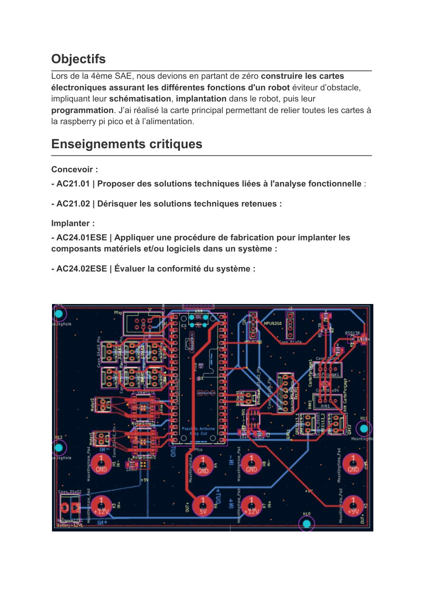
Carte principale reliant les cartes du robot à la Raspberry Pi Pico et à l’alimentation.
Ouvrir / téléchargerUtilise des noms de fichiers sans espace, sans accent et sans parenthèses. Exemple : SAE_6_nom-du-projet_Rudy_Gaillot.pdf.
Publie depuis main / root et garde index.html, style.css, main.js, les images et les PDF à la racine.